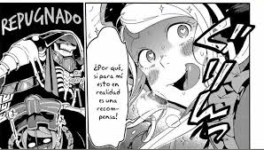

Manga

El manga empezó serialization en Kadokawa Mensual Comp revista de As en noviembre de 2014. Historia por Satoshi Oshio y Arte por Hugin Miyama.
Anime
Una adaptación a serie de anime comenzó a emitirse el 7 de julio de 2015, y concluyó el 29 de septiembre de 2015, contando con 13 episodios. El tema de apertura es "Clattanoia" interpretado por "OxT". El tema de final es "L.L.L." interpretado por "MYTH & ROID". La segunda temporada se comenzó a emitir en enero del 2018, esta fue anunciada en el último volumen de la novela (9 de enero) que consta de 13 episodios.El tema de apertura es "Go cry go" interpretado por "OxT".El tema de final es "Hydra" interpretado por "MYTH & ROID".La tercera temporada se estrenó en junio del 2018 que tiene 13 episodios.El tema de apertura es "Voracity" interpretado por "MYTH AND ROID".El tema de final es "Silent solicitude" interpretado por "OxT".
Ambas temporadas fueron licenciadas en Latinoamérica por Funimation Entertainment3? y emitidas por Crunchyroll.